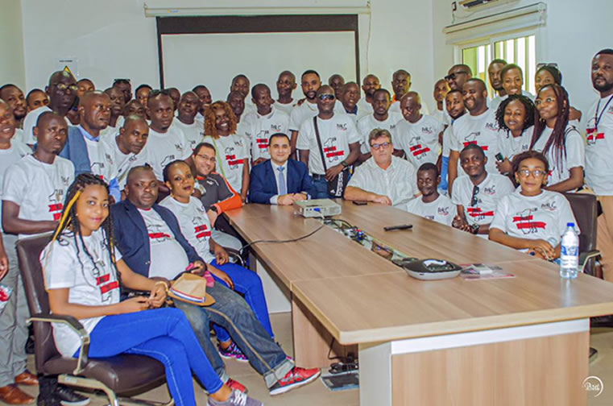

À Propos de MLC
Mercure Logistics Congo est votre partenaire de confiance pour tous vos besoins logistiques en Afrique Centrale. Nous offrons des solutions complètes de transport et de logistique.
Informations de Contact
-
-
Téléphone
+242 06 666 11 11 -